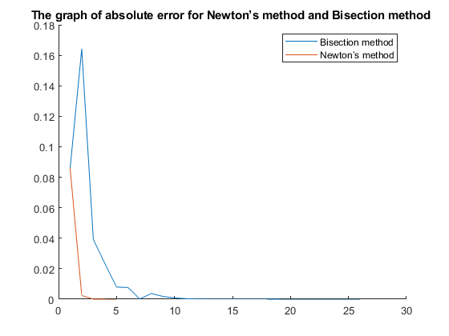

AMSC 460 - Computational Methods
Contents
HOMEWORK 1 - Problem 3
(a) Write a MATLAB program to implement Newton’s method for root finding.
clear all
syms x
f = input('Type your equation please: f = ');
x = input('The starting guess x0 = ');
xNew = x + 100;
fd = inline(diff(sym(f)));iter = 0; err = 100;
while err > 10^-8
xNew = x - (f(x)./fd(x));
err = abs(x-xNew);
x = xNew;
iter = iter + 1;
fprintf('\tAfter %g steps, root = %.15g\n', iter, xNew)
end(b) To compare root finding algorithms, we will approximate √2 using two methods: Newton and Bisection. Using the equation f(x) = x^2 − 2 = 0, use your program from part (a) to ensure √2 is obtained. For Newton, use x0=2, and for Bisection use the starting bracket [1, 2]. In each case use 10^−8 for the error tolerance.
% Use Newton’s method: clear all syms x f = @(x) x^2-2; % Given f(x) = x^2 − 2 x = 2; % The starting guess x0 = 2 xNew = x + 100; fd = inline(diff(sym(f))); iter = 0; err = 100; while err > 10^-8 xNew = x - (f(x)./fd(x)); err = abs(x-xNew); x = xNew; iter = iter + 1; fprintf('\tAfter %g steps, root = %.15g\n', iter, xNew) end % Use Bisection method f = @(x) x^2-2; a=1; b=2; fa = f(a); fb = f(b); k=0; while (b-a)/2 > 10^-8 c = (a+b)/2; fc = f(c); k = k+1; fprintf('\tAfter %g steps, root = %.15g\n', k, c) if fc == 0 break end if sign(fc)*sign(fa) < 0 b = c; fb = fc; else a = c; fa = fc; end end xc = (a+b)/2;
After 1 steps, root = 1.5 After 2 steps, root = 1.41666666666667 After 3 steps, root = 1.41421568627451 After 4 steps, root = 1.41421356237469 After 5 steps, root = 1.4142135623731 After 1 steps, root = 1.5 After 2 steps, root = 1.25 After 3 steps, root = 1.375 After 4 steps, root = 1.4375 After 5 steps, root = 1.40625 After 6 steps, root = 1.421875 After 7 steps, root = 1.4140625 After 8 steps, root = 1.41796875 After 9 steps, root = 1.416015625 After 10 steps, root = 1.4150390625 After 11 steps, root = 1.41455078125 After 12 steps, root = 1.414306640625 After 13 steps, root = 1.4141845703125 After 14 steps, root = 1.41424560546875 After 15 steps, root = 1.41421508789063 After 16 steps, root = 1.41419982910156 After 17 steps, root = 1.41420745849609 After 18 steps, root = 1.41421127319336 After 19 steps, root = 1.41421318054199 After 20 steps, root = 1.41421413421631 After 21 steps, root = 1.41421365737915 After 22 steps, root = 1.41421341896057 After 23 steps, root = 1.41421353816986 After 24 steps, root = 1.41421359777451 After 25 steps, root = 1.41421356797218 After 26 steps, root = 1.41421355307102
(c) Modify the algorithms to keep track of the absolute error en = r - xn at each iteration. Store these errors in a vector (for plotting purposes). Then plot the absolute errors on the same graph, and with a semilogarithmic y-axis (use semilogy in MATLAB). Which algorithm used the least steps to achieve the required error tolerance?
Modified Newton’s method:
clear all syms x f = @(x) x^2-2; % Given f(x) = x^2 − 2 x = 2; % The starting guess x0 = 2 r = sqrt(2); % Given root = √2 xNew = x + 100; fd = inline(diff(sym(f))); iter = 0; err = 100; en = 0; while err > 10^-8 xNew = x - (f(x)./fd(x)); err = abs(x-xNew); x = xNew; en = abs(r-x); iter = iter + 1; N(iter) = en; fprintf(['\tAfter %g steps, root = %.15g,',... ' absolute error = %.15g\n'], iter, xNew, en) end
After 1 steps, root = 1.5, absolute error = 0.0857864376269049 After 2 steps, root = 1.41666666666667, absolute error = 0.0024531042935716 After 3 steps, root = 1.41421568627451, absolute error = 2.12390141474117e-06 After 4 steps, root = 1.41421356237469, absolute error = 1.59472435257157e-12 After 5 steps, root = 1.4142135623731, absolute error = 0
Modified Bisection method:
f = @(x) x^2-2; a=1; b=2; fa = f(a); fb = f(b); k=0; Ben = 0; r=sqrt(2); while (b-a)/2 > 10^-8 c = (a+b)/2; Ben = abs(r-c); fc = f(c); k = k+1; B(k) = Ben; fprintf(['\tAfter %g steps, root = %.15g,',... ' absolute error = %.15g\n'], k, c, Ben) if fc == 0 break end if sign(fc)*sign(fa) < 0 b = c; fb = fc; else a = c; fa = fc; end end xc = (a+b)/2;
After 1 steps, root = 1.5, absolute error = 0.0857864376269049 After 2 steps, root = 1.25, absolute error = 0.164213562373095 After 3 steps, root = 1.375, absolute error = 0.0392135623730951 After 4 steps, root = 1.4375, absolute error = 0.0232864376269049 After 5 steps, root = 1.40625, absolute error = 0.00796356237309515 After 6 steps, root = 1.421875, absolute error = 0.00766143762690485 After 7 steps, root = 1.4140625, absolute error = 0.000151062373095145 After 8 steps, root = 1.41796875, absolute error = 0.00375518762690485 After 9 steps, root = 1.416015625, absolute error = 0.00180206262690485 After 10 steps, root = 1.4150390625, absolute error = 0.000825500126904855 After 11 steps, root = 1.41455078125, absolute error = 0.000337218876904855 After 12 steps, root = 1.414306640625, absolute error = 9.30782519048545e-05 After 13 steps, root = 1.4141845703125, absolute error = 2.89920605951455e-05 After 14 steps, root = 1.41424560546875, absolute error = 3.20430956548545e-05 After 15 steps, root = 1.41421508789063, absolute error = 1.52551752985453e-06 After 16 steps, root = 1.41419982910156, absolute error = 1.37332715326455e-05 After 17 steps, root = 1.41420745849609, absolute error = 6.10387700139547e-06 After 18 steps, root = 1.41421127319336, absolute error = 2.28917973577047e-06 After 19 steps, root = 1.41421318054199, absolute error = 3.81831102957975e-07 After 20 steps, root = 1.41421413421631, absolute error = 5.71843213448275e-07 After 21 steps, root = 1.41421365737915, absolute error = 9.50060552451504e-08 After 22 steps, root = 1.41421341896057, absolute error = 1.43412523856412e-07 After 23 steps, root = 1.41421353816986, absolute error = 2.42032343056309e-08 After 24 steps, root = 1.41421359777451, absolute error = 3.54014104697598e-08 After 25 steps, root = 1.41421356797218, absolute error = 5.59908808206444e-09 After 26 steps, root = 1.41421355307102, absolute error = 9.30207311178322e-09
Plot of absolute errors
hold on;semilogy(B);semilogy(N); title 'The graph of absolute error for Newton’s method and Bisection method '; legend({'Bisection method','Newton’s method'}); hold off;
We can see the Newton's method used the least steps to achieve the required error tolerance.